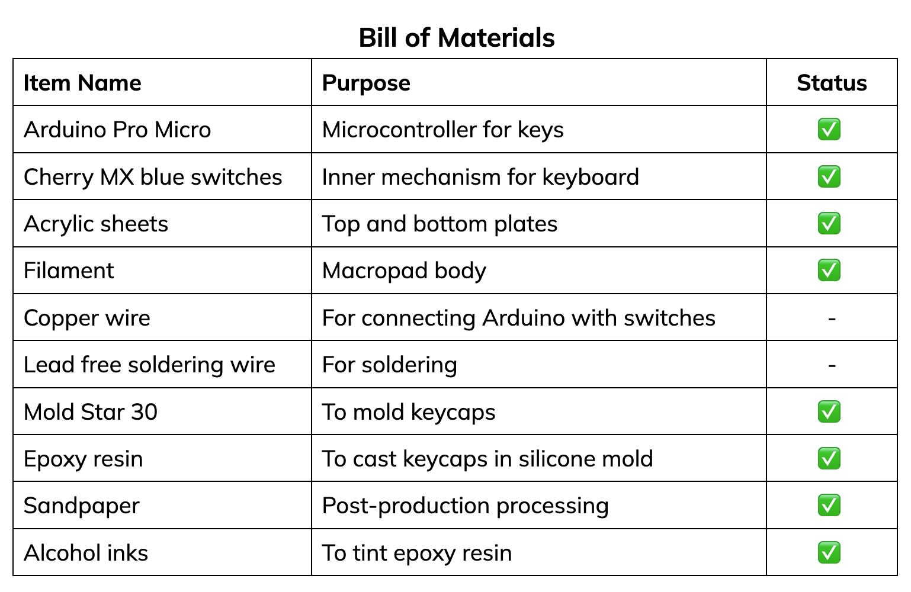

Assignment 7: Final Project Proposal
By Vanessa Chien Lai - HCDE 533
For my final project, I want to create a custom macro keypad. Macropads are basically mini keyboards that can be programmed to perform shortcuts (macros).
I really like mechanical keyboards, and felt like this could be a really good way to learn how to (1) handwire my own and (2) solder!
I plan to create a 2x4 macropad (8 keys), and program it to perform useful shortcuts, like copy + paste, a "panic" switch, mute, and Figma shortcuts.

Here are some pictures for inspiration (and for reference if you haven't seen these before)

METHODS AND TECHNIQUES USED
------
1. Rhino3D (macropad casing and laser cut shape)
2. 3D printing (macropad casing)
3. Laser cutting (top and bottom plates)
4. Mold design and casting (resin keycaps)
5. Incorporating stock parts (Arduino Pro Micro, Cherry MX blues)
MATERIALS
------
Here's the full list of materials, all of which have been sourced. Other tools and machines not listed are:
3D printer, caliper, wire cutters, cutting knife, wire stripper and soldering iron (from the MILL)


SCHEDULE & CONTIINGENCY PLANS
------
• Nov. 18 ~ 20: planning and sketching
• Nov. 21 ~ 27: 3D modeling, 3D printing, and testing
• Nov. 28 ~ Dec. 2: Laser cutting and soldering
• Dec. 3 ~ 6: Programming, final assembly, documentation
Below are the contingency plans:
• If the laser cutters are down, I will 3D print the top and bottom plates instead, and use stock parts to attach them together.
• In case of complications with soldering, programming, or faulty stock parts, I will submit a final piece that is fully assembled but with limited functionality (i.e. no specialized shortcuts)